I am an electrical engineering rising senior at the Georgia Institute of Technology (GT), interested in power electronics, VLSI systems, energy, and theoretical ML. I am always building projects in the areas that intrigue me and seeking out opportunities in different fields, however radically divergent they may be. But if there are a few things of which I am certain, they are my love for teaching, my commitment to learning, and my desire to build technology for a more equitable future.
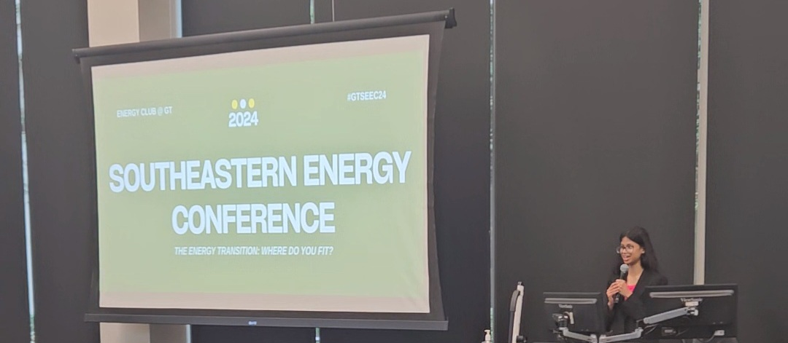
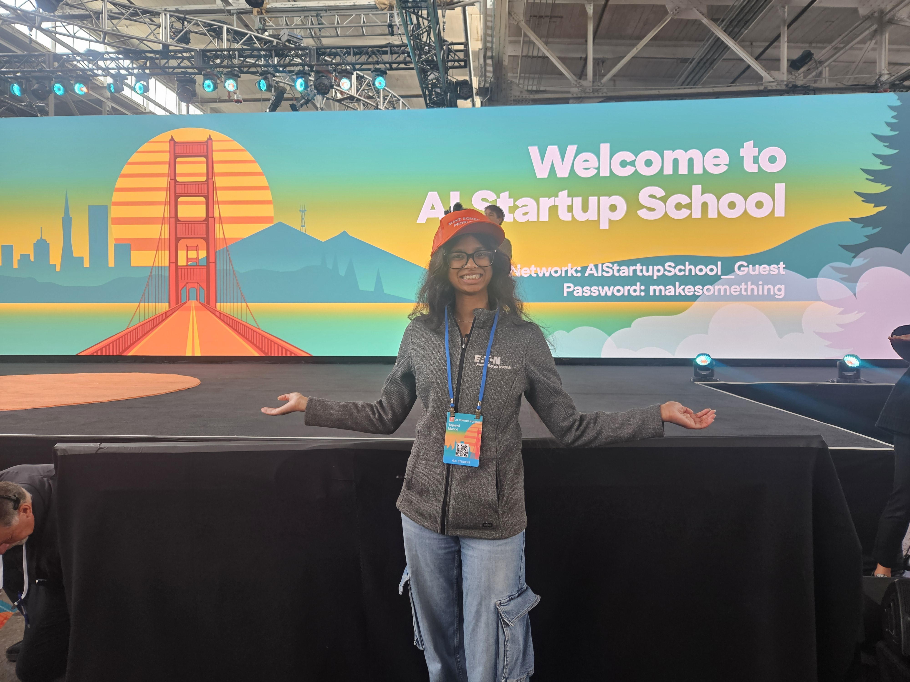
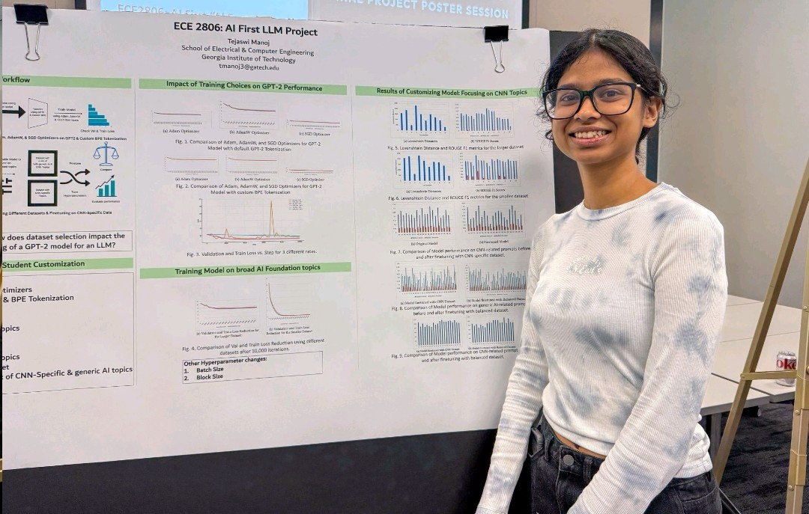
In my freshman year, I joined Energy Club as a member of the Conference Planning committee, joined the GT Solar Racing Club as an Auxiliary Systems Engineer, and also got involved with the Suit Up Professional Preparation First Year Leadership Organization. By the end of my first year, I was elected President of Energy Club which probably led to one of my most defining college experiences.
During this time, I founded the first ever EnergyHack@GT with over 84 participants, and with my stellar team, led efforts in organizing over 20 Energy Chats, bringing in 100+ new members, restarting the club's old piezoelectric project with 20 new members, procuring our merchandise, and securing our first industry sponsors and partners including GE Vernova, ExxonMobil, NVIDIA, and Kimley Horn. I will always cherish my time at Energy Club, as an experience that especially showed me how much I enjoy building something from the ground up.
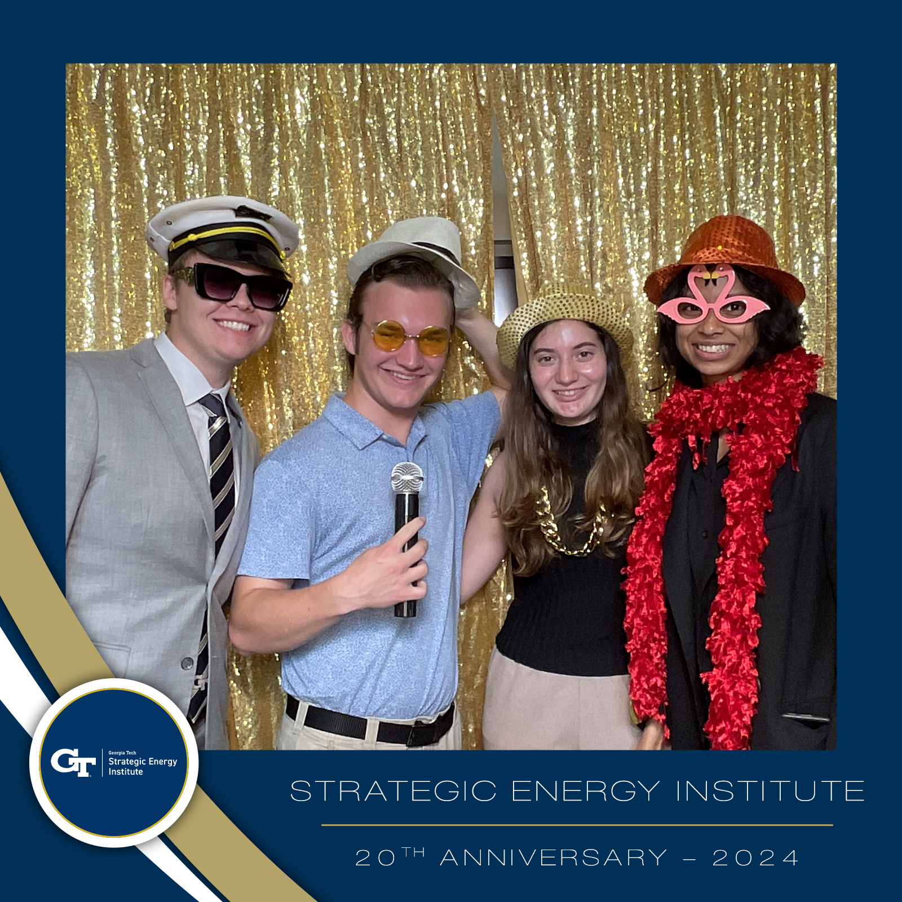
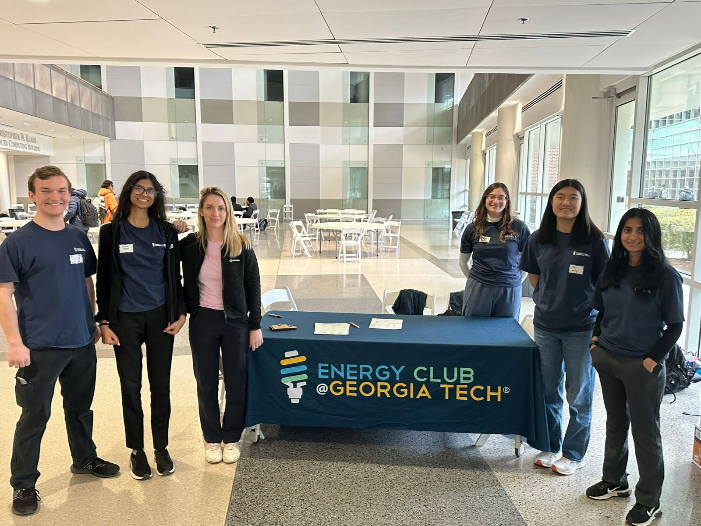
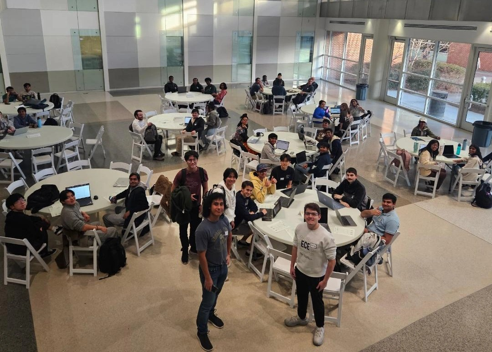
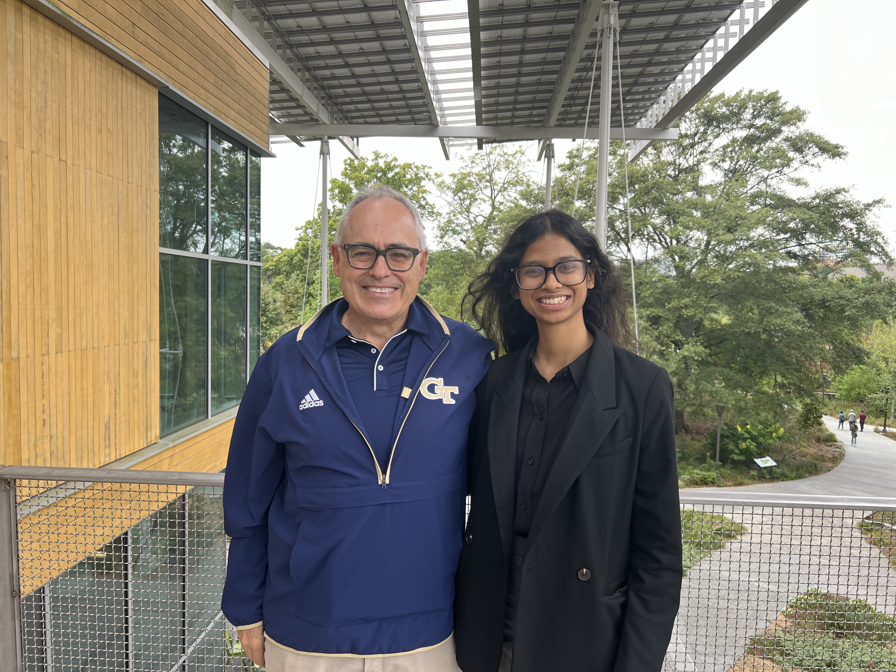
I have had the privilege of working under the guidance of Dr. Daniel Molzahn and Richard Asiamah in the Grid Optimization and Algorithms Laboratory, and developing a synthetic grid model for Ghana - my teammates and I presented our research at the Power and Energy Conference Illinois in 2025. This was the year I was nominated by my professor and awarded the Outstanding Outreach and Service Award by the School of ECE. I have also served as a Teaching Assistant for four courses, including Integral Calculus (MATH 1552), Digital Design Fundamentals (ECE 2020), Circuit Analysis (ECE 2040), and Circuits & Electronics Lab (ECE 3043). I have found no greater joy than the feeling of seeing a student's face light up when a concept finally clicks after I teach it to them.
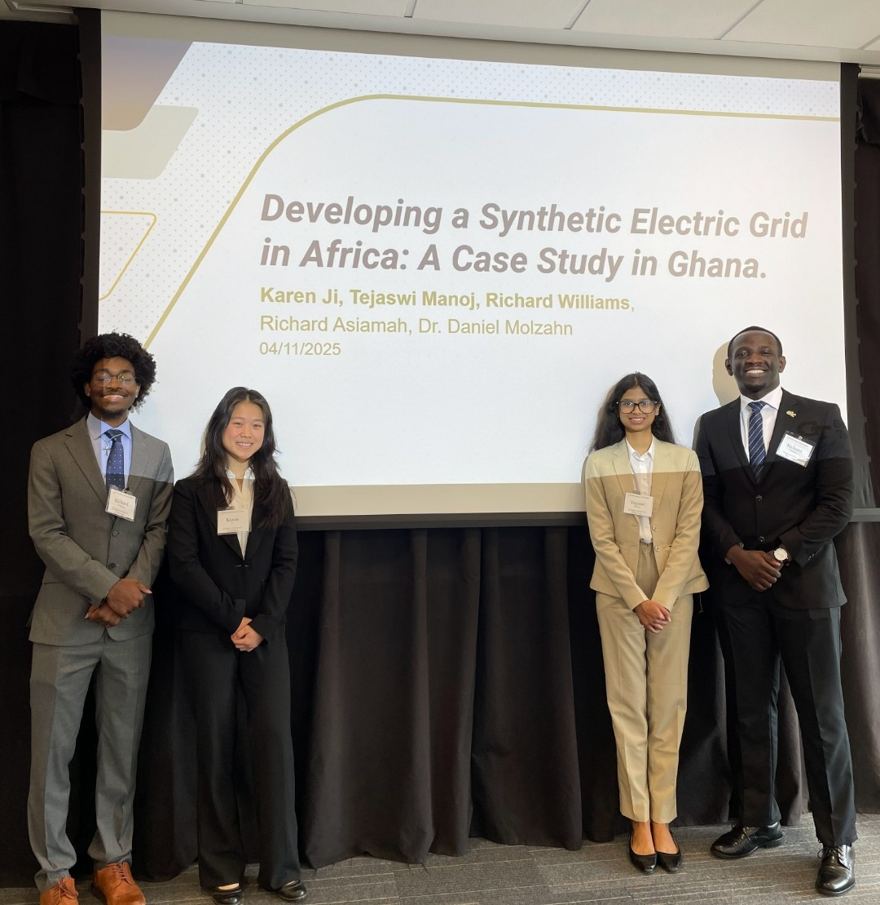
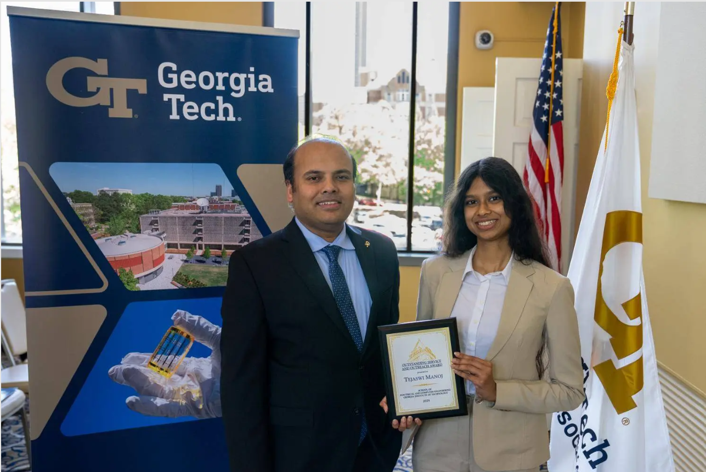
In my third year, I joined the Analog and Mixed-Signal Design team under Silicon Jackets, GT's premier chip design organization where I designed a ring oscillator as an onboarding project and a charge pump for a PLL. I am also working at Dr. Vidya Muthukumar's ML Lab. Here, I am exploring how learning takes place from unkown or strategically generated data - specifically, we are modeling a Markov game between AI agents and conducting experiments to characterize Nash equilibria.
In the summer of 2025, I interned at the Tesla Megafactory
(where they
build the Megapacks, the
large-scale rechargable
battery energy storage systems for electric grids) under the Factory Quality and Failure Analysis (FA)
Engineering
team, as a Power Electronics FA Intern. I had the opportunity to analyze electrical
failures
in the manufacturing line and work with a very talented team. This was my first real introduction to
industry-grade work in the energy sector (well, it was my first introduction to industry). This
summer of 2026, I am interning at Apple  as a
Design Verification (DV) Engineer in the Display DV
Team.
as a
Design Verification (DV) Engineer in the Display DV
Team.
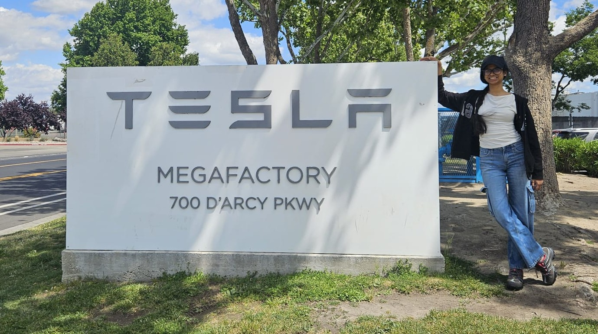
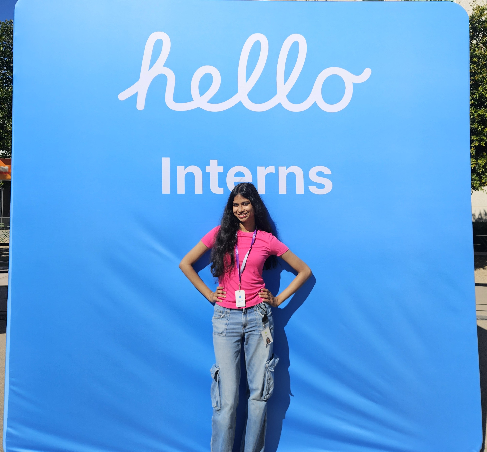
If I am not reveling in my STEM pursuits, I am usually either painting still life or crocheting a top. Back in high school, I was an avid debater and Model UN enthusiast, which has definitely instilled a lasting passion for international affairs, the social sciences, and the humanities. As an extension of that interest, I also enjoy writing, whether it is exploring societal issues or reflecting on my own stream-of-consciousness.
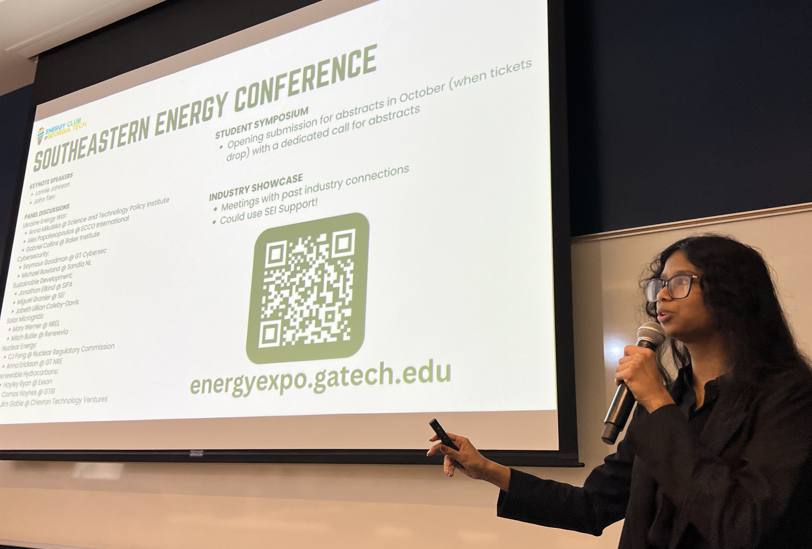
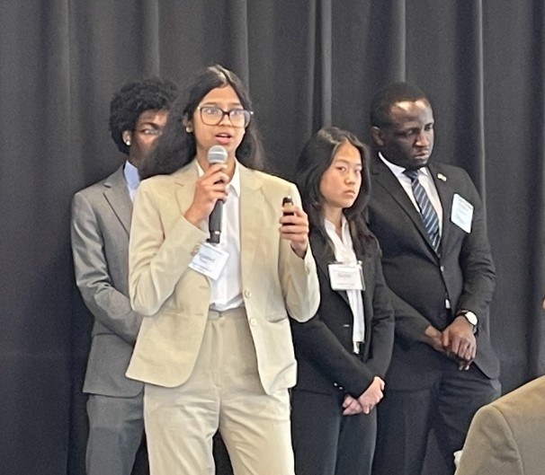